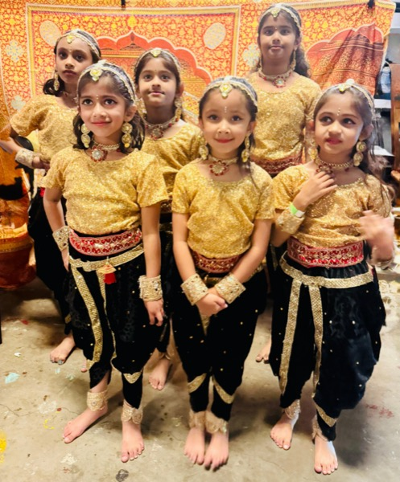
Ages 5+
Classical Bharatanatyam
A structured path from first adavus to the stage, building posture, rhythm, expression and confidence.
Enquire for your childमुद्रा नृत्यालय
Classical Bharatanatyam for children and adults in Cambrian Park, San Jose, taught in the lineage of Kalaimamani Guru Shri Madurai R. Muralidharan.
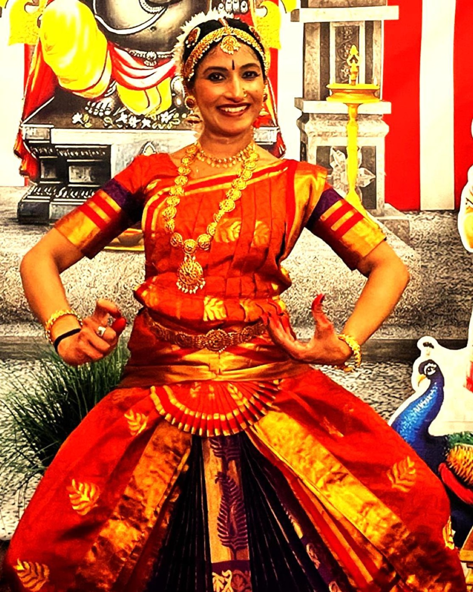
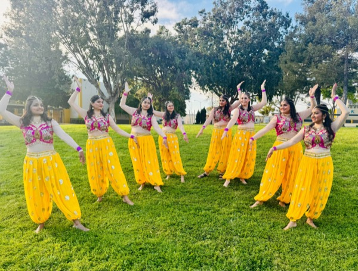
The name
At Mudra Nrityalaya, students learn more than steps. They learn to connect with the essence of Bharatanatyam: technical precision, emotive storytelling, and the joy of expressing themselves through a centuries-old tradition.
Classes
All classes are in person at our studio in Cambrian Park. Online sessions are available on request.

A structured path from first adavus to the stage, building posture, rhythm, expression and confidence.
Enquire for your child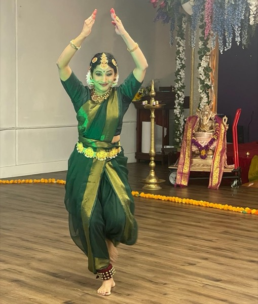
Whether you are returning to dance or starting fresh, discover graceful, expressive movement rooted in classical technique.
Enquire for yourself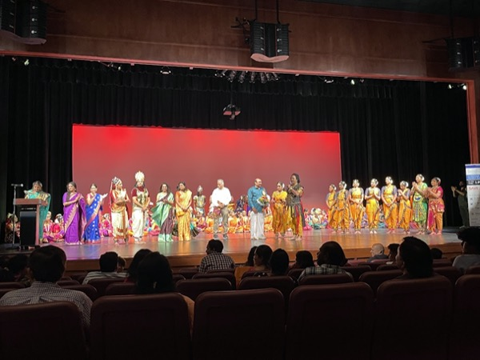
Group performance choreography for cultural events, festivals and community celebrations.
Plan a performanceThe learning path
Every student progresses at their own pace through a clear, traditional curriculum.
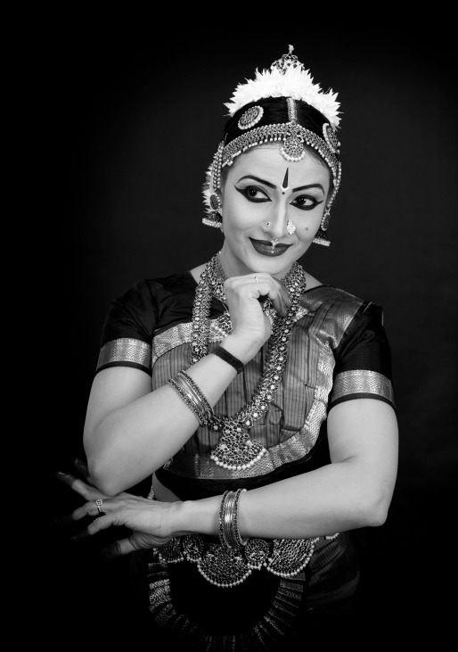
Founder & Artistic Director
Disciple of Kalaimamani Guru Shri Madurai R. Muralidharan
Rekha’s dance journey began at the age of three, with her first solo performance on stage. She trained early under Kalamandalam Smt. Rema of Kerala in both Bharatanatyam and Mohiniyattam, and today continues her own learning in her guru’s Margam 10 series, including training in Nattuvangam.
Her teaching balances technical precision with emotive storytelling, so that students not only master the movements but connect deeply with the essence of the art.
After moving to the U.S. over a decade ago, her artistic journey took a transformative turn when she joined Guru Shri Madurai R. Muralidharan’s Margam series. As his devoted disciple, she has trained extensively in Bharatanatyam, deepening her understanding of ragam, thalam, choreography and the intricate nuances of the art form. Rekha aspires to master his jathi creations and their execution.
With a vision to nurture the next generation of dancers, she established Mudra Nrityalaya, where she imparts the values of discipline, artistry and tradition. She aspires to connect dancers to their inner selves through this art form.
Beyond teaching, Rekha performs at cultural events across the Bay Area and in her guru’s large-scale productions at prestigious venues such as the Lady Andal Auditorium in Chennai. She aspires to extend these experiences to her students, offering them opportunities to contribute to Guru Shri Madurai R. Muralidharan’s grand artistic visions.
Gallery
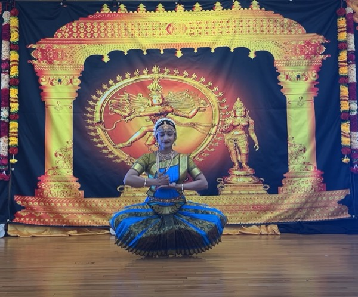
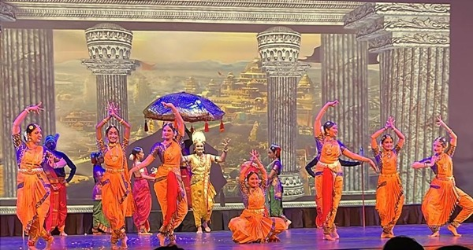
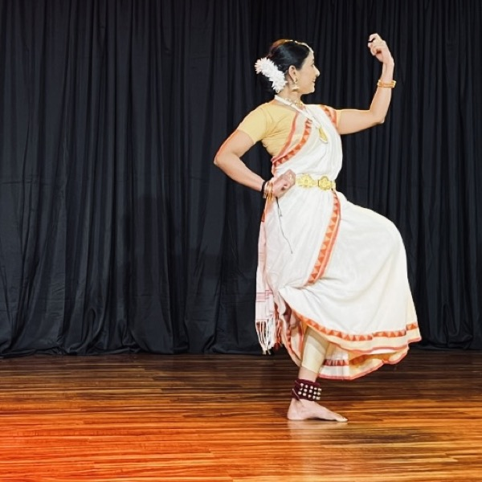
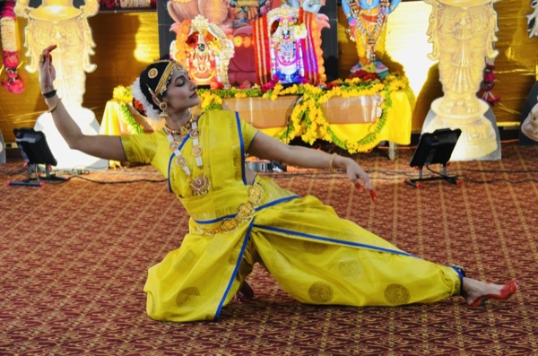
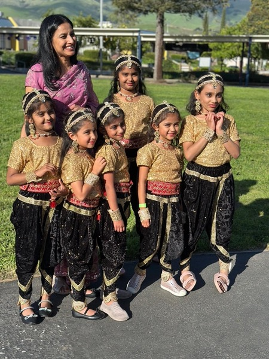
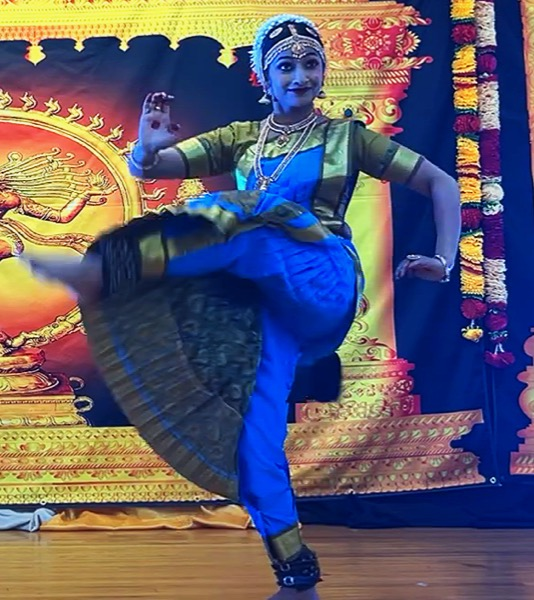
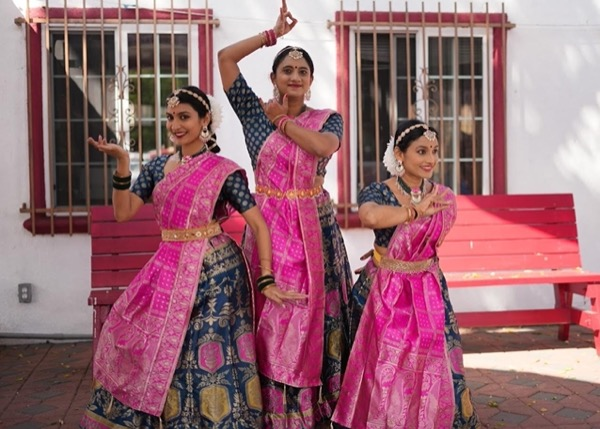
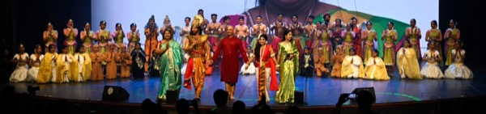
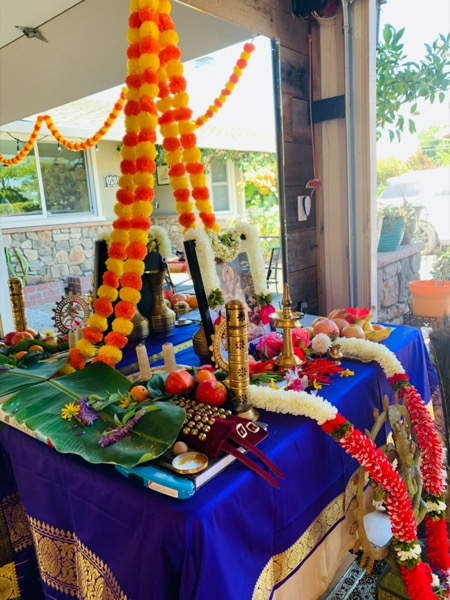
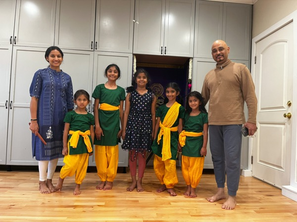
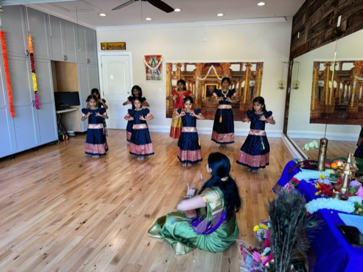
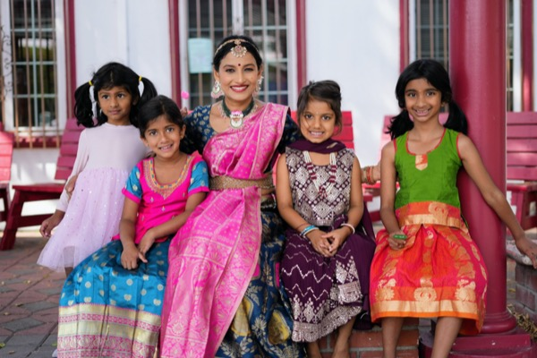
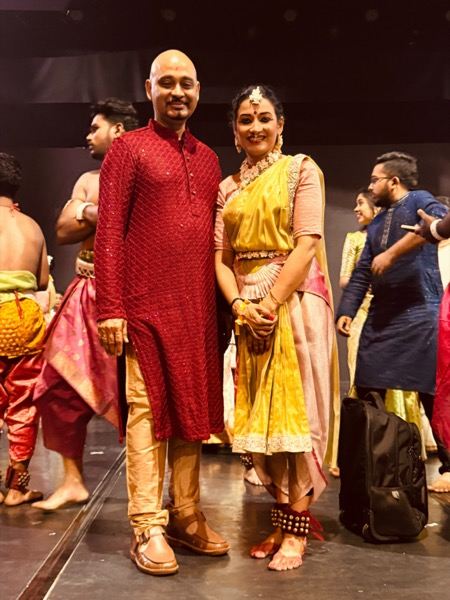
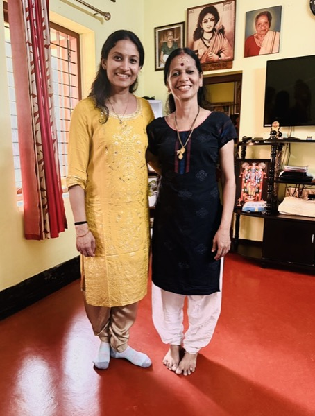
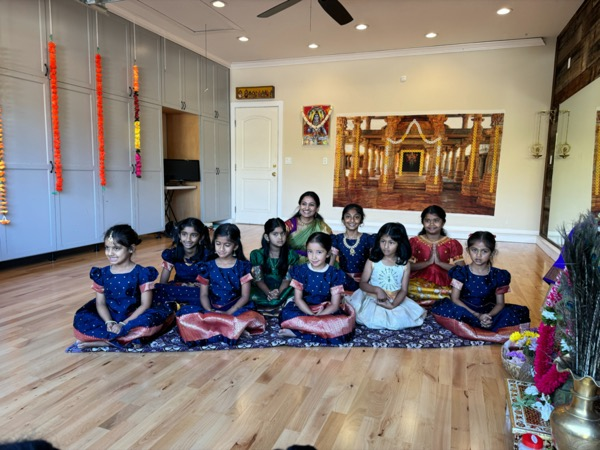
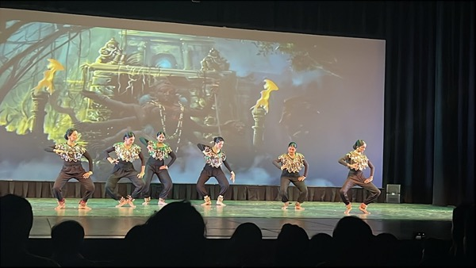
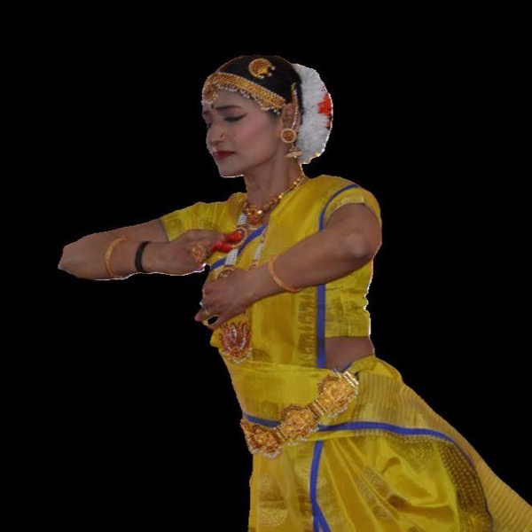
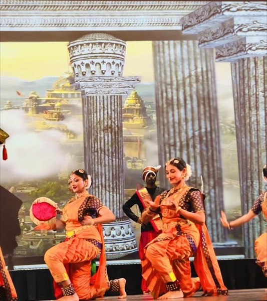
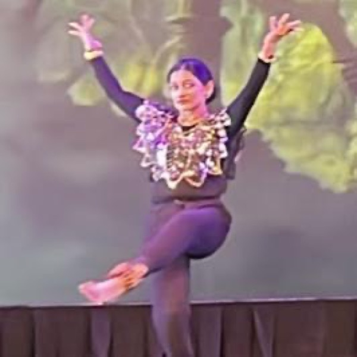
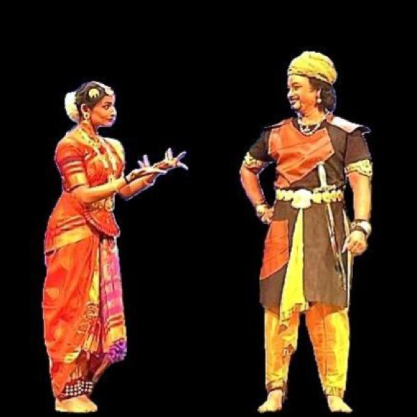
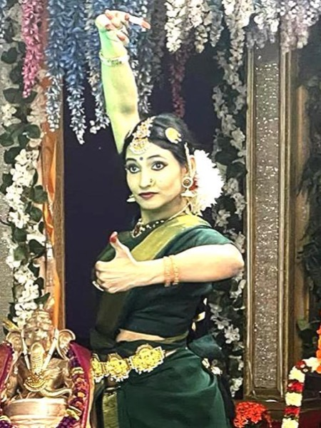
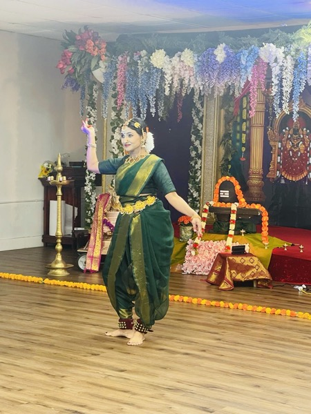
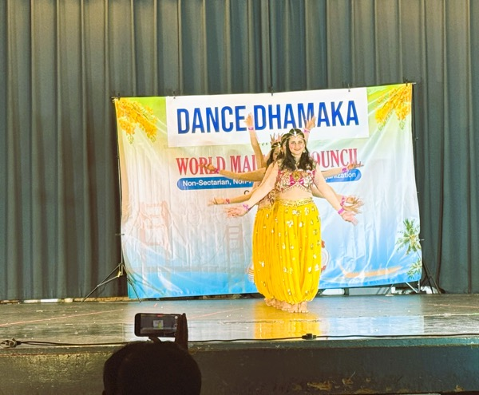
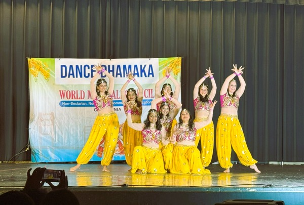
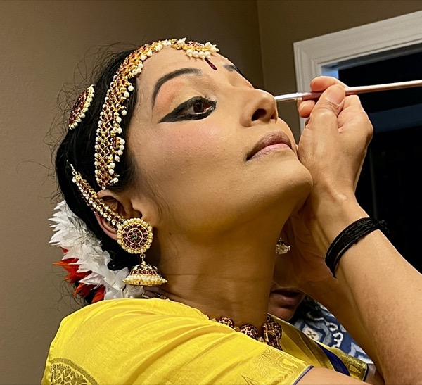
New to Bharatanatyam?
Bharatanatyam is one of India’s oldest classical dance forms, originating in the temples of Tamil Nadu. Every performance weaves together three elements.
Pure dance: rhythmic footwork and geometric movement set to rhythm, built on the adavus learned from the very first class.
Expressive dance: mudras and facial expression (abhinaya) that bring the meaning of the music and poetry to life.
Dance drama: storytelling through character, as in productions like Shakuntalam and Vayuputhra.
Questions
Classical Bharatanatyam classes are open to children aged 5 and up.
No. The Beginner level starts from the foundations: basic footwork, hand gestures, rhythm and posture.
Classes meet weekly for 60 minutes. The school year runs from August to June.
Yes. We offer semi-classical dance for adults, whether you are new to dance or returning after a break.
All regular classes are in person. Online classes can be arranged on request.
Yes. Intermediate students gain experience in stage performances and productions, including Bay Area cultural events and opportunities to take part in Guru Shri Madurai R. Muralidharan’s productions.
Our studio is on Woodford Dr in Cambrian Park, San Jose (95124). The exact address is shared on enrollment.
Begin your journey
Tell us a little about the student and we’ll get back to you with class times and next steps.
contactmudra.n@gmail.com · Woodford Dr, Cambrian Park, San Jose 95124